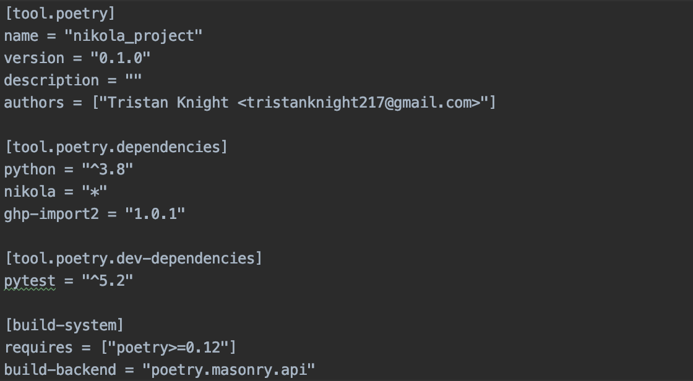
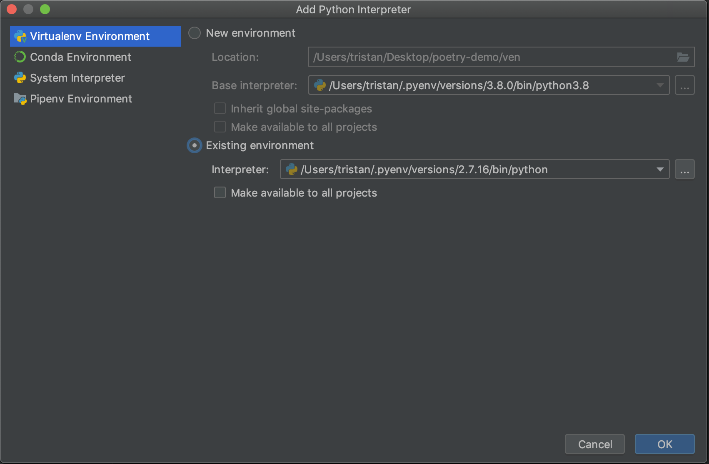

Using Poetry to Manage Dependencies in Python
A couple weeks ago, I started using Poetry to manage my projects' dependencies. So far, I have found it very helpful for quickly starting new projects and managing the dependencies of my existing projects.
What is Poetry?
Poetry is a dependency and packaging management tool for Python. With Poetry, it's easy to create a new project and manage its dependencies.
Getting Started with Poetry
The Poetry documentation explains how Poetry works in more detail. But it's quite easy to get started; first, you need install Poetry. On MacOS, you can install Poetry in the command line by running
curl -sSL https://raw.githubusercontent.com/python-poetry/poetry/master/get-poetry.py | python
Once Poetry is installed, you can create a new project in your
current directory by running poetry new project_name
A project created with Poetry will have some built-in files, one of which is called "pyproject.toml"; this is where you can specify the dependencies the project will use.
My pyproject.toml file for this blog looks like this:

As you can see, this project doesn't have very many dependencies, but for projects that require lots of dependencies,
it's helpful to be able to quickly add them to a single file. Poetry also includes syntax for specifying the
version constraints for a given dependency, which you can read
about here. If you want to quickly add a dependency to
pyproject.toml without opening the file, you can do so via the command line with poetry add dependency_name
Once you've added the dependencies you need for the project, run poetry install
in the project directory to install the dependencies (you still need to do this even if you haven't manually
added any dependencies to the pyproject.toml file). Poetry will then create a poetry.lock file in your project
directory which contains the exact versions of the installed dependencies. Committing this file to your project's
repository ensures that everyone working on the project is locked-in to the same version of each
dependency.
After installation, Poetry will also automatically create a virtual environment for your project if one doesn't already exist, but you'll probably need to configure your text editor or IDE to work with that virtual environment. If you're using PyCharm, you can simply navigate to the project interpreter settings, either by clicking the button on the bottom-right of the PyCharm UI (as shown below), or by opening PyCharm's settings and navigating from there.

Select "add interpreter" to open this window:

Select "existing environment" and then navigate to your project in the the pypoetry directory. In order to select the correct interpreter, you need to find the pypoetry directory. For me, the pypoetry directory was located at
/Users/username/Library/Caches/pypoetry
Once in the pypoetry directory, navigate to
/virtualenvs/name-of-project/bin
and select "python" as your interpreter. If you don't see the name of your project in the virtualenvs folder,
that means you probably forgot to run poetry install in your project directory. After selecting the correct
interpreter, restart the command line, and then your project's virtual environment should be good-to-go!